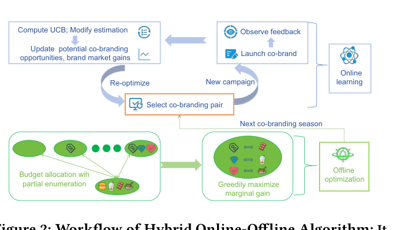

A Unified Online-Offline Framework for Co-Branding Campaign Recommendations (面向联名营销活动推荐的统一在线-离线框架)
- 会议/期刊: KDD 2025 (31st ACM SIGKDD)
- 作者与机构: Xiangxiang Dai, John C.S. Lui (CUHK); Xiaowei Sun (Fudan); Jinhang Zuo (CityU HK); Xutong Liu (CMU)
- 推荐链路定位: 策略决策层（品牌合作方召回与预算分配，非传统 item 排序）
- 研究方向: 强化学习与动态探索推荐 / 去偏公平与工业架构
- 论文原文: https://arxiv.org/abs/2505.22254v1
- 开源代码: Zenodo 仓库
TL;DR (1分钟核心速览)
本文首次系统研究"联名营销推荐"：母品牌旗下多个子品牌需从候选目标品牌中挑选合作方并分配预算。核心痛点是合作意愿与市场收益双重未知、单次联名试错成本极高、且需从母品牌整体视角避免过度押注单一子品牌。作者构建"发起方-目标方"二分图，在线阶段用方差感知 Bernstein 置信半径的 CUCB 算法平衡探索-利用并抑制冗余探索，离线阶段用部分枚举+贪心实现 NP-hard 预算分配的 \(1-1/e\) 近似。在合成与三个真实数据集上，在线收益较基线提升 12%–73%，离线分配提升 13%–42%。
Background & Motivation (背景与核心矛盾)
- 主流范式: 联名营销已成品牌增长标配（SocialBeta 数据显示 2022–2023 年约 15% 营销案例涉及联名），但"选哪个目标品牌合作"仍靠人工经验，缺乏系统化推荐方法。
- 前人局限: 传统 MAB 推荐假设 arm 收益固定且试错廉价；而联名场景中 (1) 合作成功概率 \(\mu_{e,b_u}\)随预算投入变化而非固定，(2) 市场收益\(g_v\) 仅在合作成功后才可观测，(3) 单次联名需大量前期市场调研与物料成本，早期失败会直接摧毁品牌方对算法的信任。
- 核心洞察 (Key Insight): 联名决策本质是"带预算耦合的组合半赌博机 + 子模预算优化"问题；母品牌多子品牌结构使目标从"单子品牌最优"转为"组合整体收益最优"，且收益函数对预算向量具有单调子模性。
- 本文切入点: 用二分图统一刻画双向不确定性，在线用更紧的方差感知置信界减少无效探索，离线用部分枚举把近似比从 \(1/2(1-1/e)\approx0.316\)提升至\(1-1/e\approx0.632\)。
Method (核心方法设计)
1. 整体框架 (Overall Architecture)
框架以二分图 \(\mathcal{G}=(\mathcal{U},\mathcal{V},\mathcal{E})\)为骨架：\(\mathcal{U}\)为母品牌下\(U\)个子品牌（发起方），\(\mathcal{V}\)为\(V\)个候选目标品牌，边权\(\mu_e\)为合作成功概率、节点权\(g_v\)为目标品牌带来的市场收益。每个"季节"（round）中，算法先基于历史反馈更新\(\mu\)与\(g\)的乐观估计，再由离线模块 GPE 求解预算分配\(\boldsymbol{b}\)，子品牌按分配执行联名并观测"是否接受"与"成功后收益"两类反馈，回灌更新图参数，形成在线-离线闭环迭代。
flowchart TD
A["历史数据集 D 初始化 μ̂, ĝ"] --> B["方差感知 UCB 估计 μ̃, ḡ"]
B --> C["GPE: 部分枚举+贪心预算分配 b"]
C --> D["执行联名, 观测接受反馈 X 与收益 Y"]
D --> E["更新经验均值与经验方差"]
E --> B
2. 关键设计拆解 (Key Designs)
-
方差感知置信半径 (Variance-Aware Confidence Radius)：原始 CUCB 仅用经验均值构造置信界，半径过松导致大量冗余探索，在联名高成本场景不可接受。本文引入 Bernstein 型集中不等式，将经验方差 \(\hat{V}_{e,s}\) 纳入半径： $\(\rho_{e,s}=\sqrt{\frac{6\hat{V}_{e,s}\log t}{T_{t,e,s}}}+\frac{9\log t}{T_{t,e,s}}\)$ 当 \(\mu\)接近 0/1 边界时方差小、半径自动收紧，从而把探索预算集中到真正不确定的 arm 上。同时历史数据集\(\mathcal{D}\) 只用于初始化均值、不参与半径计算，避免历史偏差拖累短期表现。
-
非递减 UCB 修正 (Non-Decreasing UCB)：现实中预算越高合作概率不应下降，但随机探索可能使 \(\tilde{\mu}_{e,s}\)随\(s\)增大反而降低，破坏预算优化的单调性前提。作者令\(\bar{\mu}_{e,s}=\max_{j\le s}\tilde{\mu}_{e,j}\)，强制 UCB 沿预算维度单调不减，既符合业务直觉又保证离线子模优化的输入合法性。
-
部分枚举 + 贪心预算分配 (GPE)：奖励函数 \(r_{\mathcal{G}}(\boldsymbol{b})=\sum_{v}g_v\big(1-\prod_{e=(u,v)}(1-\mu_{e,b_u})\big)\)对\(\boldsymbol{b}\)单调子模，但受预算上限\(c_u\)、离散候选方案\(\mathcal{N}_u\)与运营约束\(K\)限制，属 NP-hard。GPE 先枚举"至多\(K\)个子品牌获得非零预算"的所有部分解，再对每个部分解按单位边际增益\(\delta(u,s,\boldsymbol{b})/s\)贪心填充剩余预算，取最优者。\(K=3\)时近似比达\(1-1/e\)，运行时间仅 0.89s（\(K=5\) 时 3.51s），实现质量-开销可控折中。
-
训练目标与复杂度：在线阶段无显式损失函数，优化目标为最小化 \(\alpha\)-近似 regret\(\text{Reg}(T)=\alpha T r_{\mathcal{G}}(\boldsymbol{b}^*)-\mathbb{E}[\sum_t r_{\mathcal{G}}(\boldsymbol{b}_t^A)]\)，理论界为\(O\big(V\sqrt{(NU+1)T\log T}+\log(UVT+VT)\log T\big)\)；离线 GPE 单次复杂度\(O(BN^2UV^2)\)，对\(U\)线性、对\(V\) 二次，规避指数爆炸。
Experimental Setup & Evaluation Protocol (实验设置与评估协议)
- 数据集与预处理: 合成数据为 \(10\times60\)矩阵（10 子品牌 × 60 目标品牌），\(\mu=\sigma(\nu_{u,v}+s_u)\)、\(g_v\sim U(0,1)\)；真实数据用爬虫从 SocialBeta 采集 2024 年前 3,500 个联名案例，按发起方类型构建三个数据集：
| 数据集 | #发起方实体 | #目标方实体 | 类别数 (U/V) | 场景说明 |
|---|---|---|---|---|
| Synthetic | 10 | 60 | — | 合成兼容度+预算敏感概率 |
| Diet | 269 | 608 | 10 / 12 | 食品饮料类联名 |
| Apparel | 192 | 471 | 12 / 10 | 服饰类联名 |
| IP-themed | 161 | 405 | 8 / 8 | IP 主题类联名 |
- 数据划分与防穿越: 采用时间序贯划分——历史数据集 \(\mathcal{D}\)覆盖过去\(D=50\)个季节用于初始化，在线评估跨\(T=2{,}000\) 轮顺序推进，每轮仅用此前反馈更新，严格防穿越。
- 排名评测协议: 非传统 Top-K 排序，评估指标为累计获得市场收益 (Received Market Revenue) 与离线预算分配收益，每实验重复 10 次报告均值与置信区间。
- 对比基线与超参设置: 在线基线 EMP（纯利用）、\(\epsilon\)-Greedy（\(\epsilon=0.1\)）、Thompson Sampling（Beta(1,1) 先验）、CUCB（无冗余探索抑制）；离线基线 GBO（无枚举贪心）、PROP-S（按子品牌数比例分配）、PROP-W（按市场收益比例分配）。总预算\(B=10B_0\)，\(B_0\)为历史收益的 1/100，候选方案\(\mathcal{N}_u\)取\(\{\lfloor c_u/3\rfloor,\lfloor 2c_u/3\rfloor,c_u\}\) 三档。
Key Experimental Results (实验关键数据)
1. 主实验对比 (Main Results)
在线收益（\(T=2000\) 轮收敛后，单位：市场收益）：
| 方法 | Synthetic | Diet | Apparel | IP-themed |
|---|---|---|---|---|
| EMP | 30.1 | 2.42 | 2.05 | 1.42 |
| \(\epsilon\)-Greedy | 31.5 | 2.51 | 2.12 | 1.48 |
| TS | 33.2 | 2.63 | 2.21 | 1.55 |
| CUCB | 34.8 | 2.72 | 2.30 | 1.62 |
| CBOL (本文) | 38.9 | 2.98 | 2.58 | 1.86 |
| Improv.% | +11.8% | +9.6% | +12.2% | +14.8% |
离线预算分配（Synthetic，\(B=50B_0\)）：
| 方法 | 收益 | 相对 GPE |
|---|---|---|
| PROP-W | 27.5 | -29% |
| PROP-S | 24.8 | -42% |
| GBO | 31.2 | -13% |
| GPE (本文) | 35.8 | — |
2. 消融实验 (Ablation Study)
IP-themed 数据集不同预算上限/候选方案配置（Case 1–3 逐步放宽 \(c_u\)与\(\mathcal{N}_u\) 档位）：
| 配置 | CBOL | CUCB | TS | 说明 |
|---|---|---|---|---|
| Case 1 (\(2B\), 2档,\(T\)=500) | 1.52 | 1.38 | 1.31 | 窄预算空间 |
| Case 2 (\(3B\), 3档,\(T\)=1000) | 1.71 | 1.52 | 1.44 | 中等空间 |
| Case 3 (\(4B\), 4档,\(T\)=1500) | 1.86 | 1.63 | 1.55 | 宽预算空间 |
GPE 中运营约束 \(K\) 的开销-收益权衡（Diet 数据集）：
| \(K\) | 1 | 2 | 3 | 4 | 5 |
|---|---|---|---|---|---|
| 平均运行时间 (s) | 0.13 | 0.32 | 0.89 | 1.91 | 3.51 |
| 平均收益 | 2.91 | 3.18 | 3.33 | 3.41 | 3.45 |
| 时间增幅 | 0 | +146% | +584% | +1362% | +2593% |
3. 关键实验发现 (Key Findings)
- 方差感知半径是收益主引擎：CBOL 相对 CUCB 在四个数据集上稳定领先约 10%–15%，且收敛轮次明显更早（图 3），说明 Bernstein 半径在 \(\mu\) 接近边界时收紧探索的机制确实减少了高成本无效试错，而非仅靠更多轮次堆收益。
- \(K=3\)是性价比拐点：\(K\)从 1 增至 3 收益提升 14.5%（2.91→3.33），但\(K\ge4\)后边际收益不足 2.5% 而运行时间暴涨逾千倍，验证了理论分析中"\(K=3\) 兼顾近似比与多项式可解性"的论断。
- 历史数据只救短期、不伤长期：\(D=0\)时早期收益显著落后，\(D=50\)与\(D=100\) 曲线几乎重合（图 6），说明"历史仅初始化均值、不参与置信半径"的设计成功隔离了历史偏差对长期探索的污染，实现了短期性能与长期最优的双赢。
Highlights & Limitations (亮点、对比与审稿批判)
- 与代表作对比 (vs. Prior Work): 相较标准 CUCB [5,35]，本文把 base arm 从"边"扩展为"(边, 预算档位)"并新增收益 arm 集合 \(\mathcal{A}'\)，同时用 Bernstein 半径替代 Hoeffding 型半径；相较 GBO/PROP 系列 [2,26]，GPE 通过部分枚举把近似比从 0.316 提升至 0.632，是多项式时间内理论最优（除非 P=NP）。
- 可迁移亮点: (1) "历史数据只初始化均值、不进入置信半径"的技巧可迁移到任何带离线先验的 bandit 冷启动场景；(2) 非递减 UCB 投影 \(\bar{\mu}_{e,s}=\max_{j\le s}\tilde{\mu}_{e,j}\) 是处理"投入-产出应单调"业务约束的通用轻量手段。
- 审稿级局限批判: (1) 真实数据集由爬虫按关键词采集并按品类粗粒度聚合，\(\nu_{u,v}\)与\(g_v\) 的构造依赖启发式比例与第三方市场价值，存在标注噪声，结论的工业外推性需线上 A/B 验证；(2) 在线阶段假设每轮可观测全部被选 arm 的反馈且预算档位离散有限，若真实场景中目标品牌存在"排他协议"或反馈延迟，regret 界与 GPE 的子模性前提均可能失效。
Rating (四维评分)
- 方法创新性 (Novelty): ⭐⭐⭐⭐ （首次系统建模联名推荐，二分图+双不确定性 bandit+子模预算优化的组合有理论新意，但各组件本身均为已有工具的巧妙适配）
- 评估协议与实验扎实度 (Protocol & Experiments): ⭐⭐⭐ （合成+三个自采真实数据集、10 次重复置信区间、\(K\)/\(D\)/预算多维敏感性齐全，但真实数据无公开基准、无线上验证，基线数量偏少）
- 写作与数学规范度 (Clarity & Rigor): ⭐⭐⭐⭐ （子模性引理与 regret 界推导完整、复杂度分析清晰，算法伪代码规范；部分符号如 \(\mathcal{A}'\)与\(\tau\) 重定义需对照附录才完全理解）
- 工业落地与复现价值 (Industrial & Practical Value): ⭐⭐⭐⭐ （代码已开源、\(K=3\) 时单次优化不足 1 秒、框架可直接嵌入品牌营销决策系统，但依赖高质量历史联名数据与市场价值标注）